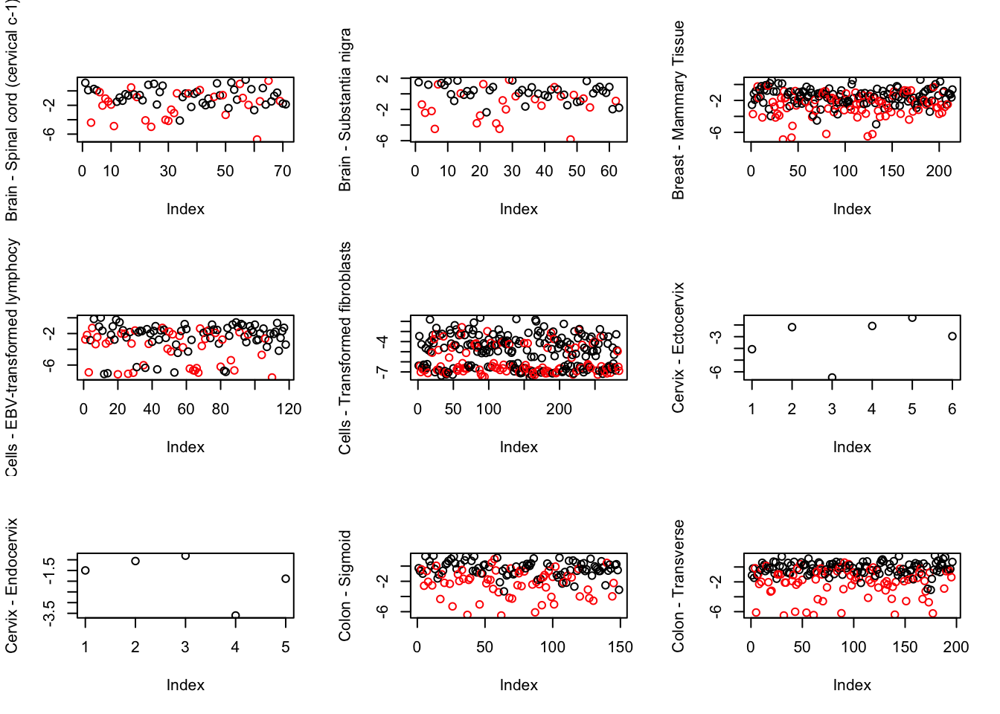
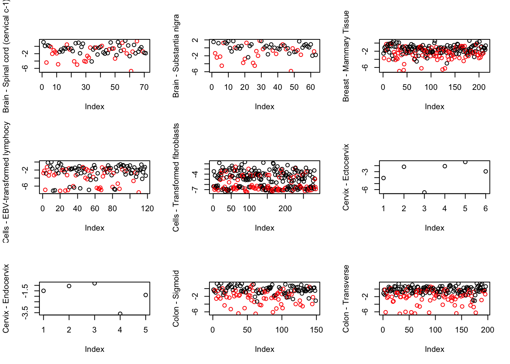

out <- mygene::queryMany(names, scopes="ensembl.gene", fields=c("name", "summary"), species="human");
## Finished
cbind.data.frame(out$name, out$summary)
## out$name
## 1 calmodulin like 3
## 2 keratin 15
## 3 oxytocin receptor
## 4 potassium calcium-activated channel subfamily N member 4
## 5 peptidyl arginine deiminase 2
## 6 calmodulin like 5
## 7 <NA>
## 8 CD79a molecule
## 9 keratin 5
## 10 immunoglobulin heavy constant alpha 2 (A2m marker)
## 11 CD27 molecule
## 12 polymeric immunoglobulin receptor
## 13 joining chain of multimeric IgA and IgM
## 14 dystonin
## 15 chromosome 2 open reading frame 82
## 16 derlin 3
## 17 keratin 7
## 18 dystrobrevin beta
## 19 protease, serine 8
## 20 <NA>
## 21 olfactomedin 4
## 22 atlastin GTPase 2
## 23 lipase maturation factor 1
## 24 epithelial cell adhesion molecule
## 25 ras homolog family member V
## 26 S100 calcium binding protein A14
## 27 PRKCQ antisense RNA 1
## 28 keratin 14
## 29 serine carboxypeptidase 1
## 30 immunoglobulin lambda constant 1
## 31 <NA>
## 32 immunoglobulin lambda like polypeptide 5
## 33 SRY-box 9
## 34 keratinocyte associated protein 3
## 35 RB binding protein 8, endonuclease
## 36 collagen type VII alpha 1 chain
## 37 lipocalin 2
## 38 mitochondrial genome maintenance exonuclease 1
## 39 immunoglobulin heavy constant alpha 1
## 40 SH3 and SYLF domain containing 1
## 41 intermediate filament family orphan 2
## 42 tripartite motif containing 29
## 43 spectrin beta, non-erythrocytic 2
## 44 <NA>
## 45 immunoglobulin lambda constant 3 (Kern-Oz+ marker)
## 46 secretogranin V
## 47 plexin B1
## 48 immunoglobulin lambda constant 2
## 49 adhesion molecule with Ig like domain 2
## 50 chromosome 22 open reading frame 23
## out$summary
## 1 <NA>
## 2 The protein encoded by this gene is a member of the keratin gene family. The keratins are intermediate filament proteins responsible for the structural integrity of epithelial cells and are subdivided into cytokeratins and hair keratins. Most of the type I cytokeratins consist of acidic proteins which are arranged in pairs of heterotypic keratin chains and are clustered in a region on chromosome 17q21.2.
## 3 The protein encoded by this gene belongs to the G-protein coupled receptor family and acts as a receptor for oxytocin. Its activity is mediated by G proteins which activate a phosphatidylinositol-calcium second messenger system. The oxytocin-oxytocin receptor system plays an important role in the uterus during parturition.
## 4 The protein encoded by this gene is part of a potentially heterotetrameric voltage-independent potassium channel that is activated by intracellular calcium. Activation is followed by membrane hyperpolarization, which promotes calcium influx. The encoded protein may be part of the predominant calcium-activated potassium channel in T-lymphocytes. This gene is similar to other KCNN family potassium channel genes, but it differs enough to possibly be considered as part of a new subfamily.
## 5 This gene encodes a member of the peptidyl arginine deiminase family of enzymes, which catalyze the post-translational deimination of proteins by converting arginine residues into citrullines in the presence of calcium ions. The family members have distinct substrate specificities and tissue-specific expression patterns. The type II enzyme is the most widely expressed family member. Known substrates for this enzyme include myelin basic protein in the central nervous system and vimentin in skeletal muscle and macrophages. This enzyme is thought to play a role in the onset and progression of neurodegenerative human disorders, including Alzheimer disease and multiple sclerosis, and it has also been implicated in glaucoma pathogenesis. This gene exists in a cluster with four other paralogous genes.
## 6 This gene encodes a novel calcium binding protein expressed in the epidermis and related to the calmodulin family of calcium binding proteins. Functional studies with recombinant protein demonstrate it does bind calcium and undergoes a conformational change when it does so. Abundant expression is detected only in reconstructed epidermis and is restricted to differentiating keratinocytes. In addition, it can associate with transglutaminase 3, shown to be a key enzyme in the terminal differentiation of keratinocytes.
## 7 <NA>
## 8 The B lymphocyte antigen receptor is a multimeric complex that includes the antigen-specific component, surface immunoglobulin (Ig). Surface Ig non-covalently associates with two other proteins, Ig-alpha and Ig-beta, which are necessary for expression and function of the B-cell antigen receptor. This gene encodes the Ig-alpha protein of the B-cell antigen component. Alternatively spliced transcript variants encoding different isoforms have been described.
## 9 The protein encoded by this gene is a member of the keratin gene family. The type II cytokeratins consist of basic or neutral proteins which are arranged in pairs of heterotypic keratin chains coexpressed during differentiation of simple and stratified epithelial tissues. This type II cytokeratin is specifically expressed in the basal layer of the epidermis with family member KRT14. Mutations in these genes have been associated with a complex of diseases termed epidermolysis bullosa simplex. The type II cytokeratins are clustered in a region of chromosome 12q12-q13.
## 10 <NA>
## 11 The protein encoded by this gene is a member of the TNF-receptor superfamily. This receptor is required for generation and long-term maintenance of T cell immunity. It binds to ligand CD70, and plays a key role in regulating B-cell activation and immunoglobulin synthesis. This receptor transduces signals that lead to the activation of NF-kappaB and MAPK8/JNK. Adaptor proteins TRAF2 and TRAF5 have been shown to mediate the signaling process of this receptor. CD27-binding protein (SIVA), a proapoptotic protein, can bind to this receptor and is thought to play an important role in the apoptosis induced by this receptor.
## 12 This gene is a member of the immunoglobulin superfamily. The encoded poly-Ig receptor binds polymeric immunoglobulin molecules at the basolateral surface of epithelial cells; the complex is then transported across the cell to be secreted at the apical surface. A significant association was found between immunoglobulin A nephropathy and several SNPs in this gene.
## 13 <NA>
## 14 This gene encodes a member of the plakin protein family of adhesion junction plaque proteins. Multiple alternatively spliced transcript variants encoding distinct isoforms have been found for this gene, but the full-length nature of some variants has not been defined. It has been reported that some isoforms are expressed in neural and muscle tissue, anchoring neural intermediate filaments to the actin cytoskeleton, and some isoforms are expressed in epithelial tissue, anchoring keratin-containing intermediate filaments to hemidesmosomes. Consistent with the expression, mice defective for this gene show skin blistering and neurodegeneration.
## 15 <NA>
## 16 The protein encoded by this gene belongs to the derlin family, and resides in the endoplasmic reticulum (ER). Proteins that are unfolded or misfolded in the ER must be refolded or degraded to maintain the homeostasis of the ER. This protein appears to be involved in the degradation of misfolded glycoproteins in the ER. Several alternatively spliced transcript variants encoding different isoforms have been identified for this gene.
## 17 The protein encoded by this gene is a member of the keratin gene family. The type II cytokeratins consist of basic or neutral proteins which are arranged in pairs of heterotypic keratin chains coexpressed during differentiation of simple and stratified epithelial tissues. This type II cytokeratin is specifically expressed in the simple epithelia lining the cavities of the internal organs and in the gland ducts and blood vessels. The genes encoding the type II cytokeratins are clustered in a region of chromosome 12q12-q13. Alternative splicing may result in several transcript variants; however, not all variants have been fully described.
## 18 This gene encodes dystrobrevin beta, a component of the dystrophin-associated protein complex (DPC). The DPC consists of dystrophin and several integral and peripheral membrane proteins, including dystroglycans, sarcoglycans, syntrophins and dystrobrevin alpha and beta. The DPC localizes to the sarcolemma and its disruption is associated with various forms of muscular dystrophy. Dystrobrevin beta is thought to interact with syntrophin and the DP71 short form of dystrophin.
## 19 This gene encodes a member of the peptidase S1 or chymotrypsin family of serine proteases. The encoded preproprotein is proteolytically processed to generate light and heavy chains that associate via a disulfide bond to form the heterodimeric enzyme. This enzyme is highly expressed in prostate epithelia and is one of several proteolytic enzymes found in seminal fluid. This protease exhibits trypsin-like substrate specificity, cleaving protein substrates at the carboxyl terminus of lysine or arginine residues. The encoded protease partially mediates proteolytic activation of the epithelial sodium channel, a regulator of sodium balance, and may also play a role in epithelial barrier formation.
## 20 <NA>
## 21 This gene was originally cloned from human myeloblasts and found to be selectively expressed in inflammed colonic epithelium. This gene encodes a member of the olfactomedin family. The encoded protein is an antiapoptotic factor that promotes tumor growth and is an extracellular matrix glycoprotein that facilitates cell adhesion.
## 22 <NA>
## 23 The protein encoded by this gene resides in the endoplasmic reticulum, and is involved in the maturation and transport of lipoprotein lipase through the secretory pathway. Mutations in this gene are associated with combined lipase deficiency. Alternatively spliced transcript variants have been found for this gene.
## 24 This gene encodes a carcinoma-associated antigen and is a member of a family that includes at least two type I membrane proteins. This antigen is expressed on most normal epithelial cells and gastrointestinal carcinomas and functions as a homotypic calcium-independent cell adhesion molecule. The antigen is being used as a target for immunotherapy treatment of human carcinomas. Mutations in this gene result in congenital tufting enteropathy.
## 25 <NA>
## 26 This gene encodes a member of the S100 protein family which contains an EF-hand motif and binds calcium. The gene is located in a cluster of S100 genes on chromosome 1. Levels of the encoded protein have been found to be lower in cancerous tissue and associated with metastasis suggesting a tumor suppressor function (PMID: 19956863, 19351828).
## 27 <NA>
## 28 This gene encodes a member of the keratin family, the most diverse group of intermediate filaments. This gene product, a type I keratin, is usually found as a heterotetramer with two keratin 5 molecules, a type II keratin. Together they form the cytoskeleton of epithelial cells. Mutations in the genes for these keratins are associated with epidermolysis bullosa simplex. At least one pseudogene has been identified at 17p12-p11.
## 29 <NA>
## 30 <NA>
## 31 <NA>
## 32 This gene encodes one of the immunoglobulin lambda-like polypeptides. It is located within the immunoglobulin lambda locus but it does not require somatic rearrangement for expression. The first exon of this gene is unrelated to immunoglobulin variable genes; the second and third exons are the immunoglobulin lambda joining 1 and the immunoglobulin lambda constant 1 gene segments. Alternative splicing results in multiple transcript variants.
## 33 The protein encoded by this gene recognizes the sequence CCTTGAG along with other members of the HMG-box class DNA-binding proteins. It acts during chondrocyte differentiation and, with steroidogenic factor 1, regulates transcription of the anti-Muellerian hormone (AMH) gene. Deficiencies lead to the skeletal malformation syndrome campomelic dysplasia, frequently with sex reversal.
## 34 <NA>
## 35 The protein encoded by this gene is a ubiquitously expressed nuclear protein. It is found among several proteins that bind directly to retinoblastoma protein, which regulates cell proliferation. This protein complexes with transcriptional co-repressor CTBP. It is also associated with BRCA1 and is thought to modulate the functions of BRCA1 in transcriptional regulation, DNA repair, and/or cell cycle checkpoint control. It is suggested that this gene may itself be a tumor suppressor acting in the same pathway as BRCA1. Three transcript variants encoding two different isoforms have been found for this gene. More transcript variants exist, but their full-length natures have not been determined.
## 36 This gene encodes the alpha chain of type VII collagen. The type VII collagen fibril, composed of three identical alpha collagen chains, is restricted to the basement zone beneath stratified squamous epithelia. It functions as an anchoring fibril between the external epithelia and the underlying stroma. Mutations in this gene are associated with all forms of dystrophic epidermolysis bullosa. In the absence of mutations, however, an acquired form of this disease can result from an autoimmune response made to type VII collagen.
## 37 This gene encodes a protein that belongs to the lipocalin family. Members of this family transport small hydrophobic molecules such as lipids, steroid hormones and retinoids. The protein encoded by this gene is a neutrophil gelatinase-associated lipocalin and plays a role in innate immunity by limiting bacterial growth as a result of sequestering iron-containing siderophores. The presence of this protein in blood and urine is an early biomarker of acute kidney injury. This protein is thought to be be involved in multiple cellular processes, including maintenance of skin homeostasis, and suppression of invasiveness and metastasis. Mice lacking this gene are more susceptible to bacterial infection than wild type mice.
## 38 The protein encoded by this gene is a nuclear-encoded mitochondrial protein necessary for the maintenance of mitochondrial genome synthesis. The encoded protein is a RecB-type exonuclease and primarily cleaves single-stranded DNA. Defects in this gene have been associated with mitochondrial DNA depletion syndrome-11. Three transcript variants encoding different isoforms have been found for this gene.
## 39 <NA>
## 40 <NA>
## 41 <NA>
## 42 The protein encoded by this gene belongs to the TRIM protein family. It has multiple zinc finger motifs and a leucine zipper motif. It has been proposed to form homo- or heterodimers which are involved in nucleic acid binding. Thus, it may act as a transcriptional regulatory factor involved in carcinogenesis and/or differentiation. It may also function in the suppression of radiosensitivity since it is associated with ataxia telangiectasia phenotype.
## 43 Spectrins are principle components of a cell's membrane-cytoskeleton and are composed of two alpha and two beta spectrin subunits. The protein encoded by this gene (SPTBN2), is called spectrin beta non-erythrocytic 2 or beta-III spectrin. It is related to, but distinct from, the beta-II spectrin gene which is also known as spectrin beta non-erythrocytic 1 (SPTBN1). SPTBN2 regulates the glutamate signaling pathway by stabilizing the glutamate transporter EAAT4 at the surface of the plasma membrane. Mutations in this gene cause a form of spinocerebellar ataxia, SCA5, that is characterized by neurodegeneration, progressive locomotor incoordination, dysarthria, and uncoordinated eye movements.
## 44 <NA>
## 45 <NA>
## 46 This gene encodes a secreted chaperone protein that prevents the aggregation of other secreted proteins, including proteins that are associated with neurodegenerative and metabolic disease. The encoded protein may be best known for its role in the trafficking and activation of prohormone convertase PC2 (encoded by Gene ID: 5126). Phosphorylation of the encoded protein has been shown to have an inhibitory effect on its chaperone function.
## 47 <NA>
## 48 <NA>
## 49 <NA>
## 50 <NA>
out <- mygene::queryMany(names, scopes="ensembl.gene", fields=c("name", "summary"), species="human");
## Finished
cbind.data.frame(out$name, out$summary)
## out$name
## 1 polycystin 1, transient receptor potential channel interacting pseudogene 1
## 2 SET binding factor 1
## 3 <NA>
## 4 <NA>
## 5 mitochondrial ribosomal protein S18A pseudogene 1
## 6 DExD/H-box helicase 60
## 7 <NA>
## 8 CDKN1A interacting zinc finger protein 1
## 9 <NA>
## 10 <NA>
## 11 <NA>
## 12 FLII, actin remodeling protein
## 13 TBC1 domain family member 9B
## 14 ankyrin repeat domain 11
## 15 <NA>
## 16 zinc finger protein 311
## 17 <NA>
## 18 deoxyhypusine hydroxylase
## 19 WD repeat domain 5
## 20 DOT1 like histone lysine methyltransferase
## 21 RNA polymerase II subunit F
## 22 schlafen family member 5
## 23 ring finger protein 220
## 24 sterile alpha motif domain containing 9 like
## 25 ORAI calcium release-activated calcium modulator 2
## 26 zinc finger protein 592
## 27 peptidase D
## 28 methyl-CpG binding domain protein 3
## 29 <NA>
## 30 MT-RNR2-like 2
## 31 sphingosine kinase 2
## 32 mitochondrial ribosomal protein S34
## 33 MYC associated zinc finger protein
## 34 radical S-adenosyl methionine domain containing 2
## 35 ArfGAP with GTPase domain, ankyrin repeat and PH domain 4
## 36 <NA>
## 37 <NA>
## 38 TNK2 antisense RNA 1
## 39 LUC7 like 2, pre-mRNA splicing factor
## 40 NNT antisense RNA 1
## 41 mitochondrially encoded NADH:ubiquinone oxidoreductase core subunit 2 pseudogene 28
## 42 ankyrin repeat domain 13B
## 43 lysine methyltransferase 2D
## 44 zinc finger protein 316
## 45 <NA>
## 46 CD4 molecule
## 47 dishevelled segment polarity protein 1
## 48 beta-1,3-galactosyltransferase 6
## 49 pyridoxal phosphatase
## 50 nth like DNA glycosylase 1
## out$summary
## 1 <NA>
## 2 This gene encodes a member of the protein-tyrosine phosphatase family. However, the encoded protein does not appear to be a catalytically active phosphatase because it lacks several amino acids in the catalytic pocket. This protein contains a Guanine nucleotide exchange factor (GEF) domain which is necessary for its role in growth and differentiation. Mutations in this gene have been associated with Charcot-Marie-Tooth disease 4B3. Pseudogenes of this gene have been defined on chromosomes 1 and 8.
## 3 <NA>
## 4 <NA>
## 5 <NA>
## 6 DEAD box proteins, characterized by the conserved motif Asp-Glu-Ala-Asp (DEAD), are putative RNA helicases which are implicated in a number of cellular procsses involving RNA binding and alteration of RNA secondary structure. This gene encodes a DEXD/H box RNA helicase that functions as an antiviral factor and promotes RIG-I-like receptor-mediated signaling.
## 7 <NA>
## 8 The protein encoded by this gene is a zinc finger DNA binding protein that interacts with CIP1, part of a complex with cyclin E. The encoded protein may regulate the cellular localization of CIP1. Several transcript variants encoding different isoforms have been found for this gene.
## 9 <NA>
## 10 <NA>
## 11 <NA>
## 12 This gene encodes a protein with a gelsolin-like actin binding domain and an N-terminal leucine-rich repeat-protein protein interaction domain. The protein is similar to a Drosophila protein involved in early embryogenesis and the structural organization of indirect flight muscle. The gene is located within the Smith-Magenis syndrome region on chromosome 17.
## 13 <NA>
## 14 This locus encodes an ankryin repeat domain-containing protein. The encoded protein inhibits ligand-dependent activation of transcription. Mutations in this gene have been associated with KBG syndrome, which is characterized by macrodontia, distinctive craniofacial features, short stature, skeletal anomalies, global developmental delay, seizures and intellectual disability. Alternatively spliced transcript variants have been described. Related pseudogenes exist on chromosomes 2 and X.
## 15 <NA>
## 16 <NA>
## 17 <NA>
## 18 This gene encodes a metalloenzyme that catalyzes the last step in the conversion of lysine to the unique amino acid hypusine in eukaryotic initiation factor 5A. The encoded protein hydroxylates deoxyhypusine to form hypusine in the mature eukaryotic initiation factor 5A protein. Alternative splicing results in multiple transcript variants.
## 19 This gene encodes a member of the WD repeat protein family. WD repeats are minimally conserved regions of approximately 40 amino acids typically bracketed by gly-his and trp-asp (GH-WD), which may facilitate formation of heterotrimeric or multiprotein complexes. Members of this family are involved in a variety of cellular processes, including cell cycle progression, signal transduction, apoptosis, and gene regulation. This protein contains 7 WD repeats. Alternatively spliced transcript variants encoding the same protein have been identified.
## 20 The protein encoded by this gene is a histone methyltransferase that methylates lysine-79 of histone H3. It is inactive against free core histones, but shows significant histone methyltransferase activity against nucleosomes.
## 21 This gene encodes the sixth largest subunit of RNA polymerase II, the polymerase responsible for synthesizing messenger RNA in eukaryotes. In yeast, this polymerase subunit, in combination with at least two other subunits, forms a structure that stabilizes the transcribing polymerase on the DNA template. Alternative splicing results in multiple transcript variants.
## 22 <NA>
## 23 <NA>
## 24 This gene encodes a cytoplasmic protein that acts as a tumor suppressor but also plays a key role in cell proliferation and the innate immune response to viral infection. The encoded protein contains an N-terminal sterile alpha motif domain. Naturally occurring mutations in this gene are associated with myeloid disorders such as juvenile myelomonocytic leukemia, acute myeloid leukemia, and myelodysplastic syndrome. Naturally occurring mutations are also associated with hepatitis-B related hepatocellular carcinoma, normophosphatemic familial tumoral calcinosis, and ataxia-pancytopenia syndrome.
## 25 <NA>
## 26 This gene is thought to play a role in a complex developmental pathway and the regulation of genes involved in cerebellar development. Mutations in this gene have been associated with autosomal recessive spinocerebellar ataxia.
## 27 This gene encodes a member of the peptidase family. The protein forms a homodimer that hydrolyzes dipeptides or tripeptides with C-terminal proline or hydroxyproline residues. The enzyme serves an important role in the recycling of proline, and may be rate limiting for the production of collagen. Mutations in this gene result in prolidase deficiency, which is characterized by the excretion of large amount of di- and tri-peptides containing proline. Multiple transcript variants encoding different isoforms have been found for this gene.
## 28 DNA methylation is the major modification of eukaryotic genomes and plays an essential role in mammalian development. This gene belongs to a family of nuclear proteins which are characterized by the presence of a methyl-CpG binding domain (MBD). The encoded protein is a subunit of the NuRD, a multisubunit complex containing nucleosome remodeling and histone deacetylase activities. Unlike the other family members, the encoded protein is not capable of binding to methylated DNA. The protein mediates the association of metastasis-associated protein 2 with the core histone deacetylase complex. Alternative splicing results in multiple transcript variants of this gene.
## 29 <NA>
## 30 <NA>
## 31 This gene encodes one of two sphingosine kinase isozymes that catalyze the phosphorylation of sphingosine into sphingosine 1-phosphate. Sphingosine 1-phosphate mediates many cellular processes including migration, proliferation and apoptosis, and also plays a role in several types of cancer by promoting angiogenesis and tumorigenesis. The encoded protein may play a role in breast cancer proliferation and chemoresistance. Alternatively spliced transcript variants encoding multiple isoforms have been observed for this gene.
## 32 Mammalian mitochondrial ribosomal proteins are encoded by nuclear genes and help in protein synthesis within the mitochondrion. Mitochondrial ribosomes (mitoribosomes) consist of a small 28S subunit and a large 39S subunit. They have an estimated 75% protein to rRNA composition compared to prokaryotic ribosomes, where this ratio is reversed. Another difference between mammalian mitoribosomes and prokaryotic ribosomes is that the latter contain a 5S rRNA. Among different species, the proteins comprising the mitoribosome differ greatly in sequence, and sometimes in biochemical properties, which prevents easy recognition by sequence homology. This gene encodes a 28S subunit protein. Alternative splicing results in multiple transcript variants.
## 33 <NA>
## 34 <NA>
## 35 <NA>
## 36 <NA>
## 37 <NA>
## 38 <NA>
## 39 This gene encodes a protein that contains a C2H2-type zinc finger, coiled-coil region and arginine, serine-rich (RS) domain. A similar protein in mouse interacts with sodium channel modifier 1, and the encoded protein may be involved in the recognition of non-consensus splice donor sites in association with the U1 snRNP spliceosomal subunit. Alternatively spliced transcript variants encoding multiple isoforms have been observed for this gene.
## 40 <NA>
## 41 <NA>
## 42 <NA>
## 43 The protein encoded by this gene is a histone methyltransferase that methylates the Lys-4 position of histone H3. The encoded protein is part of a large protein complex called ASCOM, which has been shown to be a transcriptional regulator of the beta-globin and estrogen receptor genes. Mutations in this gene have been shown to be a cause of Kabuki syndrome.
## 44 <NA>
## 45 <NA>
## 46 This gene encodes a membrane glycoprotein of T lymphocytes that interacts with major histocompatibility complex class II antigenes and is also a receptor for the human immunodeficiency virus. This gene is expressed not only in T lymphocytes, but also in B cells, macrophages, and granulocytes. It is also expressed in specific regions of the brain. The protein functions to initiate or augment the early phase of T-cell activation, and may function as an important mediator of indirect neuronal damage in infectious and immune-mediated diseases of the central nervous system. Multiple alternatively spliced transcript variants encoding different isoforms have been identified in this gene.
## 47 DVL1, the human homolog of the Drosophila dishevelled gene (dsh) encodes a cytoplasmic phosphoprotein that regulates cell proliferation, acting as a transducer molecule for developmental processes, including segmentation and neuroblast specification. DVL1 is a candidate gene for neuroblastomatous transformation. The Schwartz-Jampel syndrome and Charcot-Marie-Tooth disease type 2A have been mapped to the same region as DVL1. The phenotypes of these diseases may be consistent with defects which might be expected from aberrant expression of a DVL gene during development.
## 48 The enzyme encoded by this intronless gene is a beta-1,3-galactosyltransferase found in the medial Golgi apparatus, where it catalyzes the transfer of galactose from UDP-galactose to substrates containing a terminal beta-linked galactose moiety. The encoded enzyme has a particular affinity for galactose-beta-1,4-xylose found in the linker region of glycosamines. This enzyme is required for glycosaminoglycan synthesis.
## 49 Pyridoxal 5-prime-phosphate (PLP) is the active form of vitamin B6 that acts as a coenzyme in maintaining biochemical homeostasis. The preferred degradation route from PLP to 4-pyridoxic acid involves the dephosphorylation of PLP by PDXP (Jang et al., 2003 [PubMed 14522954]).
## 50 The protein encoded by this gene is a DNA N-glycosylase of the endonuclease III family. Like a similar protein in E. coli, the encoded protein has DNA glycosylase activity on DNA substrates containing oxidized pyrimidine residues and has apurinic/apyrimidinic lyase activity.
out <- mygene::queryMany(names, scopes="ensembl.gene", fields=c("name", "summary"), species="human");
## Finished
## Pass returnall=TRUE to return lists of duplicate or missing query terms.
cbind.data.frame(out$name, out$summary)
## out$name
## 1 CLPTM1, transmembrane protein
## 2 mitochondrial trans-2-enoyl-CoA reductase
## 3 surfeit 4
## 4 clustered mitochondria homolog
## 5 MEF2 activating motif and SAP domain containing transcriptional regulator
## 6 ubiquinol-cytochrome c reductase, Rieske iron-sulfur polypeptide 1
## 7 ALG3, alpha-1,3- mannosyltransferase
## 8 CLPTM1 like
## 9 cytochrome c oxidase subunit 6B1
## 10 zinc finger protein 19
## 11 family with sequence similarity 149 member B1
## 12 thioredoxin related transmembrane protein 2
## 13 late endosomal/lysosomal adaptor, MAPK and MTOR activator 1
## 14 translocase of inner mitochondrial membrane 17A
## 15 <NA>
## 16 REV1, DNA directed polymerase
## 17 histocompatibility minor 13
## 18 <NA>
## 19 adenylate kinase 2
## 20 <NA>
## 21 major facilitator superfamily domain containing 5
## 22 solute carrier family 25 member 3
## 23 lon peptidase 1, mitochondrial
## 24 nicalin
## 25 coiled-coil-helix-coiled-coil-helix domain containing 10
## 26 transmembrane protein 214
## 27 <NA>
## 28 SCO1, cytochrome c oxidase assembly protein
## 29 mitochondrial ribosomal protein L46
## 30 COMM domain containing 9
## 31 RAB5B, member RAS oncogene family
## 32 <NA>
## 33 translocase of inner mitochondrial membrane 13
## 34 cytochrome c1
## 35 cyclin dependent kinase inhibitor 1B
## 36 mitochondrial ribosomal protein L15
## 37 translocase of inner mitochondrial membrane 50
## 38 phospholipase C delta 4
## 39 enoyl-CoA hydratase, short chain 1
## 40 tudor domain containing 7
## 41 synaptotagmin 11
## 42 guanylate cyclase 1 soluble subunit beta
## 43 lysine methyltransferase 2E
## 44 BTB domain containing 10
## 45 glycogen synthase 1
## 46 NADH:ubiquinone oxidoreductase subunit A3
## 47 chromosome 11 open reading frame 24
## 48 BCR, RhoGEF and GTPase activating protein
## 49 PWWP domain containing 2A
## 50 prolyl 4-hydroxylase subunit beta
## out$summary
## 1 <NA>
## 2 The protein encoded by this gene is an oxidoreductase that catalyzes the last step in mitochondrial fatty acid synthesis. Defects in this gene are a cause of childhood-onset dystonia and optic atrophy.
## 3 This gene is located in the surfeit gene cluster, which is comprised of very tightly linked housekeeping genes that do not share sequence similarity. The encoded protein is a conserved integral membrane protein that interacts with endoplasmic reticulum-Golgi intermediate compartment proteins. Disruption of this gene results in reduced numbers of endoplasmic reticulum-Golgi intermediate compartment clusters and redistribution of coat protein I to the cytosol. Alternate splicing results in multiple transcript variants.
## 4 <NA>
## 5 <NA>
## 6 <NA>
## 7 This gene encodes a member of the ALG3 family. The encoded protein catalyses the addition of the first dol-P-Man derived mannose in an alpha 1,3 linkage to Man5GlcNAc2-PP-Dol. Defects in this gene have been associated with congenital disorder of glycosylation type Id (CDG-Id) characterized by abnormal N-glycosylation. Multiple transcript variants encoding different isoforms have been found for this gene.
## 8 The protein encoded by this gene is a membrane protein whose overexpression in cisplatin-sensitive cells causes apoptosis. Polymorphisms in this gene have been reported to increase susceptibility to several cancers, including lung, pancreatic, and breast cancers.
## 9 Cytochrome c oxidase (COX), the terminal enzyme of the mitochondrial respiratory chain, catalyzes the electron transfer from reduced cytochrome c to oxygen. It is a heteromeric complex consisting of 3 catalytic subunits encoded by mitochondrial genes and multiple structural subunits encoded by nuclear genes. The mitochondrially-encoded subunits function in electron transfer, and the nuclear-encoded subunits may be involved in the regulation and assembly of the complex. This nuclear gene encodes subunit VIb. Mutations in this gene are associated with severe infantile encephalomyopathy. Three pseudogenes COX6BP-1, COX6BP-2 and COX6BP-3 have been found on chromosomes 7, 17 and 22q13.1-13.2, respectively.
## 10 The protein encoded by this gene contains a zinc finger, a nucleic acid-binding domain present in many transcription factors. This gene is located in a region next to ZNF23, a gene also encoding a zinc finger protein, on chromosome 16.
## 11 <NA>
## 12 This gene encodes a member of the disulfide isomerase (PDI) family of endoplasmic reticulum (ER) proteins that catalyze protein folding and thiol-disulfide interchange reactions. The encoded protein has an N-terminal ER-signal sequence, a catalytically active thioredoxin domain, one transmembrane domain and a C-terminal ER-retention sequence. This protein is enriched on the mitochondria-associated-membrane of the ER via palmitoylation of two of its cytosolically exposed cysteines.
## 13 <NA>
## 14 <NA>
## 15 <NA>
## 16 This gene encodes a protein with similarity to the S. cerevisiae mutagenesis protein Rev1. The Rev1 proteins contain a BRCT domain, which is important in protein-protein interactions. A suggested role for the human Rev1-like protein is as a scaffold that recruits DNA polymerases involved in translesion synthesis (TLS) of damaged DNA.
## 17 The protein encoded by this gene, which localizes to the endoplasmic reticulum, catalyzes intramembrane proteolysis of some signal peptides after they have been cleaved from a preprotein. This activity is required to generate signal sequence-derived human lymphocyte antigen-E epitopes that are recognized by the immune system, and to process hepatitis C virus core protein. The encoded protein is an integral membrane protein with sequence motifs characteristic of the presenilin-type aspartic proteases. Multiple transcript variants encoding several different isoforms have been found for this gene.
## 18 <NA>
## 19 Adenylate kinases are involved in regulating the adenine nucleotide composition within a cell by catalyzing the reversible transfer of phosphate groups among adenine nucleotides. Three isozymes of adenylate kinase, namely 1, 2, and 3, have been identified in vertebrates; this gene encodes isozyme 2. Expression of these isozymes is tissue-specific and developmentally regulated. Isozyme 2 is localized in the mitochondrial intermembrane space and may play a role in apoptosis. Mutations in this gene are the cause of reticular dysgenesis. Alternate splicing results in multiple transcript variants. Pseudogenes of this gene are found on chromosomes 1 and 2.
## 20 <NA>
## 21 <NA>
## 22 The protein encoded by this gene catalyzes the transport of phosphate into the mitochondrial matrix, either by proton cotransport or in exchange for hydroxyl ions. The protein contains three related segments arranged in tandem which are related to those found in other characterized members of the mitochondrial carrier family. Both the N-terminal and C-terminal regions of this protein protrude toward the cytosol. Multiple alternatively spliced transcript variants have been isolated.
## 23 This gene encodes a mitochondrial matrix protein that belongs to the Lon family of ATP-dependent proteases. This protein mediates the selective degradation of misfolded, unassembled or oxidatively damaged polypeptides in the mitochondrial matrix. It may also have a chaperone function in the assembly of inner membrane protein complexes, and participate in the regulation of mitochondrial gene expression and maintenance of the integrity of the mitochondrial genome. Decreased expression of this gene has been noted in a patient with hereditary spastic paraplegia (PMID:18378094). Alternatively spliced transcript variants have been found for this gene.
## 24 <NA>
## 25 This gene encodes a mitochondrial protein that is enriched at cristae junctions in the intermembrane space. It may play a role in cristae morphology maintenance or oxidative phosphorylation. Mutations in this gene cause frontotemporal dementia and/or amyotrophic lateral sclerosis-2. Alternative splicing of this gene results in multiple transcript variants. Related pseudogenes have been identified on chromosomes 7 and 19.
## 26 <NA>
## 27 <NA>
## 28 Mammalian cytochrome c oxidase (COX) catalyzes the transfer of reducing equivalents from cytochrome c to molecular oxygen and pumps protons across the inner mitochondrial membrane. In yeast, 2 related COX assembly genes, SCO1 and SCO2 (synthesis of cytochrome c oxidase), enable subunits 1 and 2 to be incorporated into the holoprotein. This gene is the human homolog to the yeast SCO1 gene.
## 29 Mammalian mitochondrial ribosomal proteins are encoded by nuclear genes and help in protein synthesis within the mitochondrion. Mitochondrial ribosomes (mitoribosomes) consist of a small 28S subunit and a large 39S subunit. They have an estimated 75% protein to rRNA composition compared to prokaryotic ribosomes, where this ratio is reversed. Another difference between mammalian mitoribosomes and prokaryotic ribosomes is that the latter contain a 5S rRNA. Among different species, the proteins comprising the mitoribosome differ greatly in sequence, and sometimes in biochemical properties, which prevents easy recognition by sequence homology. This gene encodes a 39S subunit protein.
## 30 <NA>
## 31 <NA>
## 32 <NA>
## 33 This gene encodes a member of the evolutionarily conserved TIMM (translocase of inner mitochondrial membrane) family of proteins that function as chaperones in the import of proteins from the cytoplasm into the mitochondrial inner membrane. Proteins of this family play a role in collecting substrate proteins from the translocase of the outer mitochondrial membrane (TOM) complex and delivering them to either the sorting and assembly machinery in the outer mitochondrial membrane (SAM) complex or the TIMM22 complex in the inner mitochondrial membrane. The encoded protein and the translocase of mitochondrial inner membrane 8a protein form a 70 kDa complex in the intermembrane space.
## 34 This gene encodes a subunit of the cytochrome bc1 complex, which plays an important role in the mitochondrial respiratory chain by transferring electrons from the Rieske iron-sulfur protein to cytochrome c. Mutations in this gene may cause mitochondrial complex III deficiency, nuclear type 6.
## 35 This gene encodes a cyclin-dependent kinase inhibitor, which shares a limited similarity with CDK inhibitor CDKN1A/p21. The encoded protein binds to and prevents the activation of cyclin E-CDK2 or cyclin D-CDK4 complexes, and thus controls the cell cycle progression at G1. The degradation of this protein, which is triggered by its CDK dependent phosphorylation and subsequent ubiquitination by SCF complexes, is required for the cellular transition from quiescence to the proliferative state. Mutations in this gene are associated with multiple endocrine neoplasia type IV (MEN4).
## 36 Mammalian mitochondrial ribosomal proteins are encoded by nuclear genes and help in protein synthesis within the mitochondrion. Mitochondrial ribosomes (mitoribosomes) consist of a small 28S subunit and a large 39S subunit. They have an estimated 75% protein to rRNA composition compared to prokaryotic ribosomes, where this ratio is reversed. Another difference between mammalian mitoribosomes and prokaryotic ribosomes is that the latter contain a 5S rRNA. Among different species, the proteins comprising the mitoribosome differ greatly in sequence, and sometimes in biochemical properties, which prevents easy recognition by sequence homology. This gene encodes a 39S subunit protein that belongs to the EcoL15 ribosomal protein family. A pseudogene corresponding to this gene is found on chromosome 15q.
## 37 This gene encodes a subunit of the TIM23 inner mitochondrial membrane translocase complex. The encoded protein functions as the receptor subunit that recognizes the mitochondrial targeting signal, or presequence, on protein cargo that is destined for the mitochondrial inner membrane and matrix. This protein may also play a role in maintaining the membrane permeability barrier, and knockdown of this gene in human cells results in the release of cytochrome c and apoptosis.
## 38 This gene encodes a member of the delta class of phospholipase C enzymes. Phospholipase C enzymes play a critical role in many cellular processes by hydrolyzing phosphatidylinositol 4,5-bisphosphate into two intracellular second messengers, inositol 1,4,5-trisphosphate and diacylglycerol. Expression of this gene may be a marker for cancer.
## 39 The protein encoded by this gene functions in the second step of the mitochondrial fatty acid beta-oxidation pathway. It catalyzes the hydration of 2-trans-enoyl-coenzyme A (CoA) intermediates to L-3-hydroxyacyl-CoAs. The gene product is a member of the hydratase/isomerase superfamily. It localizes to the mitochondrial matrix. Transcript variants utilizing alternative transcription initiation sites have been described in the literature.
## 40 The protein encoded by this gene belongs to the Tudor family of proteins. This protein contains conserved Tudor domains and LOTUS domains. It is a component of RNA granules, which function in RNA processing. Mutations in this gene have been associated with cataract formation in mouse and human. Alternative splicing results in multiple transcript variants.
## 41 This gene is a member of the synaptotagmin gene family and encodes a protein similar to other family members that are known calcium sensors and mediate calcium-dependent regulation of membrane trafficking in synaptic transmission. The encoded protein is also a substrate for ubiquitin-E3-ligase parkin. The gene has previously been referred to as synaptotagmin XII but has been renamed synaptotagmin XI to be consistent with mouse and rat official nomenclature.
## 42 This gene encodes the beta subunit of the soluble guanylate cyclase (sGC), which catalyzes the conversion of GTP (guanosine triphosphate) to cGMP (cyclic guanosine monophosphate). The encoded protein contains an HNOX domain, which serves as a receptor for ligands such as nitric oxide, oxygen and nitrovasodilator drugs. Alternative splicing results in multiple transcript variants.
## 43 This gene is a member of the myeloid/lymphoid or mixed-lineage leukemia (MLL) family and encodes a protein with an N-terminal PHD zinc finger and a central SET domain. Overexpression of the protein inhibits cell cycle progression. Alternate transcriptional splice variants have been characterized.
## 44 <NA>
## 45 The protein encoded by this gene catalyzes the addition of glucose monomers to the growing glycogen molecule through the formation of alpha-1,4-glycoside linkages. Mutations in this gene are associated with muscle glycogen storage disease. Alternatively spliced transcript variants encoding different isoforms have been found for this gene.
## 46 <NA>
## 47 <NA>
## 48 A reciprocal translocation between chromosomes 22 and 9 produces the Philadelphia chromosome, which is often found in patients with chronic myelogenous leukemia. The chromosome 22 breakpoint for this translocation is located within the BCR gene. The translocation produces a fusion protein which is encoded by sequence from both BCR and ABL, the gene at the chromosome 9 breakpoint. Although the BCR-ABL fusion protein has been extensively studied, the function of the normal BCR gene product is not clear. The protein has serine/threonine kinase activity and is a GTPase-activating protein for p21rac. Two transcript variants encoding different isoforms have been found for this gene.
## 49 <NA>
## 50 This gene encodes the beta subunit of prolyl 4-hydroxylase, a highly abundant multifunctional enzyme that belongs to the protein disulfide isomerase family. When present as a tetramer consisting of two alpha and two beta subunits, this enzyme is involved in hydroxylation of prolyl residues in preprocollagen. This enzyme is also a disulfide isomerase containing two thioredoxin domains that catalyze the formation, breakage and rearrangement of disulfide bonds. Other known functions include its ability to act as a chaperone that inhibits aggregation of misfolded proteins in a concentration-dependent manner, its ability to bind thyroid hormone, its role in both the influx and efflux of S-nitrosothiol-bound nitric oxide, and its function as a subunit of the microsomal triglyceride transfer protein complex.
out <- mygene::queryMany(names, scopes="ensembl.gene", fields=c("name", "summary"), species="human");
## Finished
cbind.data.frame(out$name, out$summary)
## out$name
## 1 procollagen C-endopeptidase enhancer 2
## 2 SPARC/osteonectin, cwcv and kazal like domains proteoglycan 1
## 3 ectonucleoside triphosphate diphosphohydrolase 7
## 4 fibulin 2
## 5 natriuretic peptide receptor 2
## 6 gap junction protein beta 2
## 7 Cbl proto-oncogene B
## 8 RAD51 recombinase
## 9 SEC14 like lipid binding 2
## 10 Fanconi anemia complementation group A
## 11 matrix metallopeptidase 2
## 12 6-phosphofructo-2-kinase/fructose-2,6-biphosphatase 4
## 13 Kruppel like factor 9
## 14 uncharacterized LOC105369438
## 15 ATP binding cassette subfamily A member 9
## 16 cysteine rich secretory protein LCCL domain containing 2
## 17 reticulophagy regulator 1
## 18 vasorin
## 19 cell division cycle 25A
## 20 lamin B1
## 21 <NA>
## 22 BLOC-1 related complex subunit 5
## 23 fatty acid desaturase 2
## 24 cartilage intermediate layer protein
## 25 thymidine kinase 1
## 26 paraspeckle component 1 pseudogene 1
## 27 thioredoxin domain containing 17
## 28 TIMP metallopeptidase inhibitor 2
## 29 eukaryotic translation initiation factor 2B subunit gamma
## 30 peptidylprolyl isomerase like 1
## 31 zinc finger AN1-type containing 5
## 32 zinc finger protein 35
## 33 mitogen-activated protein kinase kinase kinase 8
## 34 exostosin glycosyltransferase 1
## 35 aldehyde dehydrogenase 18 family member A1
## 36 phosphoserine phosphatase
## 37 phosphatidylinositol glycan anchor biosynthesis class U
## 38 <NA>
## 39 <NA>
## 40 target of myb1 like 2 membrane trafficking protein
## 41 protein phosphatase 1 regulatory subunit 3G
## 42 RAS p21 protein activator 3
## 43 RAD54 like (S. cerevisiae)
## 44 leucine rich alpha-2-glycoprotein 1
## 45 collagen type VI alpha 3 chain
## 46 ST3 beta-galactoside alpha-2,3-sialyltransferase 5
## 47 RAMP2 antisense RNA 1
## 48 arachidonate 15-lipoxygenase, type B
## 49 apolipoprotein C1
## 50 family with sequence similarity 72 member A
## out$summary
## 1 <NA>
## 2 This gene encodes the protein core of a seminal plasma proteoglycan containing chondroitin- and heparan-sulfate chains. The protein's function is unknown, although similarity to thyropin-type cysteine protease-inhibitors suggests its function may be related to protease inhibition.
## 3 This gene encodes a purine-converting ectoenzyme which belongs to the ecto-nucleoside triphosphate diphosphohydrolase (E-NTPDase) family. The encoded protein hydrolyzes extracellular nucleoside triphosphates (UTP, GTP, and CTP) to nucleoside monophosphates as part of a purinergic signaling pathway. It contains two transmembrane domains at the N- and C-termini and a large, hydrophobic catalytic domain located in between. This gene affects oxidative stress as well as DNA damage and is a mediator of senescence.
## 4 This gene encodes an extracellular matrix protein, which belongs to the fibulin family. This protein binds various extracellular ligands and calcium. It may play a role during organ development, in particular, during the differentiation of heart, skeletal and neuronal structures. Alternatively spliced transcript variants encoding different isoforms have been identified.
## 5 This gene encodes natriuretic peptide receptor B, one of two integral membrane receptors for natriuretic peptides. Both NPR1 and NPR2 contain five functional domains: an extracellular ligand-binding domain, a single membrane-spanning region, and intracellularly a protein kinase homology domain, a helical hinge region involved in oligomerization, and a carboxyl-terminal guanylyl cyclase catalytic domain. The protein is the primary receptor for C-type natriuretic peptide (CNP), which upon ligand binding exhibits greatly increased guanylyl cyclase activity. Mutations in this gene are the cause of acromesomelic dysplasia Maroteaux type.
## 6 This gene encodes a member of the gap junction protein family. The gap junctions were first characterized by electron microscopy as regionally specialized structures on plasma membranes of contacting adherent cells. These structures were shown to consist of cell-to-cell channels that facilitate the transfer of ions and small molecules between cells. The gap junction proteins, also known as connexins, purified from fractions of enriched gap junctions from different tissues differ. According to sequence similarities at the nucleotide and amino acid levels, the gap junction proteins are divided into two categories, alpha and beta. Mutations in this gene are responsible for as much as 50% of pre-lingual, recessive deafness.
## 7 <NA>
## 8 The protein encoded by this gene is a member of the RAD51 protein family. RAD51 family members are highly similar to bacterial RecA and Saccharomyces cerevisiae Rad51, and are known to be involved in the homologous recombination and repair of DNA. This protein can interact with the ssDNA-binding protein RPA and RAD52, and it is thought to play roles in homologous pairing and strand transfer of DNA. This protein is also found to interact with BRCA1 and BRCA2, which may be important for the cellular response to DNA damage. BRCA2 is shown to regulate both the intracellular localization and DNA-binding ability of this protein. Loss of these controls following BRCA2 inactivation may be a key event leading to genomic instability and tumorigenesis. Multiple transcript variants encoding different isoforms have been found for this gene.
## 9 This gene encodes a cytosolic protein which belongs to a family of lipid-binding proteins including Sec14p, alpha-tocopherol transfer protein, and cellular retinol-binding protein. The encoded protein stimulates squalene monooxygenase which is a downstream enzyme in the cholesterol biosynthetic pathway. Alternatively spliced transcript variants encoding different isoforms have been identified for this gene.
## 10 The Fanconi anemia complementation group (FANC) currently includes FANCA, FANCB, FANCC, FANCD1 (also called BRCA2), FANCD2, FANCE, FANCF, FANCG, FANCI, FANCJ (also called BRIP1), FANCL, FANCM and FANCN (also called PALB2). The previously defined group FANCH is the same as FANCA. Fanconi anemia is a genetically heterogeneous recessive disorder characterized by cytogenetic instability, hypersensitivity to DNA crosslinking agents, increased chromosomal breakage, and defective DNA repair. The members of the Fanconi anemia complementation group do not share sequence similarity; they are related by their assembly into a common nuclear protein complex. This gene encodes the protein for complementation group A. Alternative splicing results in multiple transcript variants encoding different isoforms. Mutations in this gene are the most common cause of Fanconi anemia.
## 11 This gene is a member of the matrix metalloproteinase (MMP) gene family, that are zinc-dependent enzymes capable of cleaving components of the extracellular matrix and molecules involved in signal transduction. The protein encoded by this gene is a gelatinase A, type IV collagenase, that contains three fibronectin type II repeats in its catalytic site that allow binding of denatured type IV and V collagen and elastin. Unlike most MMP family members, activation of this protein can occur on the cell membrane. This enzyme can be activated extracellularly by proteases, or, intracellulary by its S-glutathiolation with no requirement for proteolytical removal of the pro-domain. This protein is thought to be involved in multiple pathways including roles in the nervous system, endometrial menstrual breakdown, regulation of vascularization, and metastasis. Mutations in this gene have been associated with Winchester syndrome and Nodulosis-Arthropathy-Osteolysis (NAO) syndrome. Alternative splicing results in multiple transcript variants encoding different isoforms.
## 12 The protein encoded by this gene is one of four bifunctional kinase/phosphatases that regulate the concentration of the glycolytic byproduct fructose-2,6-bisphosphate (F2,6BP). The encoded protein is highly expressed in cancer cells and is induced by hypoxia. This protein is essential to the survival of cancer cells under conditions of hypoxia, because it increases the amount of F2,6BP and ATP at a time when the cell cannot produce much of them. This finding suggests that this protein may be a good target for disruption in cancer cells, hopefully imperiling their survival. Several transcript variants encoding different isoforms have been found for this gene.
## 13 The protein encoded by this gene is a transcription factor that binds to GC box elements located in the promoter. Binding of the encoded protein to a single GC box inhibits mRNA expression while binding to tandemly repeated GC box elements activates transcription.
## 14 <NA>
## 15 This gene is a member of the superfamily of ATP-binding cassette (ABC) transporters and the encoded protein contains two transmembrane domains and two nucleotide binding folds. ABC proteins transport various molecules across extra- and intracellular membranes. ABC genes are divided into seven distinct subfamilies (ABC1, MDR/TAP, MRP, ALD, OABP, GCN20, and White). This gene is a member of the ABC1 subfamily and is clustered with four other ABC1 family members on chromosome 17q24. Transcriptional expression of this gene is induced during monocyte differentiation into macrophages and is suppressed by cholesterol import.
## 16 <NA>
## 17 The protein encoded by this gene is a cis-Golgi transmembrane protein that may be necessary for the long-term survival of nociceptive and autonomic ganglion neurons. Mutations in this gene are a cause of hereditary sensory and autonomic neuropathy type IIB (HSAN IIB), and this gene may also play a role in susceptibility to vascular dementia. Alternatively spliced transcript variants encoding multiple isoforms have been observed for this gene.
## 18 <NA>
## 19 CDC25A is a member of the CDC25 family of phosphatases. CDC25A is required for progression from G1 to the S phase of the cell cycle. It activates the cyclin-dependent kinase CDC2 by removing two phosphate groups. CDC25A is specifically degraded in response to DNA damage, which prevents cells with chromosomal abnormalities from progressing through cell division. CDC25A is an oncogene, although its exact role in oncogenesis has not been demonstrated. Two transcript variants encoding different isoforms have been found for this gene.
## 20 This gene encodes one of the two B-type lamin proteins and is a component of the nuclear lamina. A duplication of this gene is associated with autosomal dominant adult-onset leukodystrophy (ADLD). Alternative splicing results in multiple transcript variants.
## 21 <NA>
## 22 <NA>
## 23 The protein encoded by this gene is a member of the fatty acid desaturase (FADS) gene family. Desaturase enzymes regulate unsaturation of fatty acids through the introduction of double bonds between defined carbons of the fatty acyl chain. FADS family members are considered fusion products composed of an N-terminal cytochrome b5-like domain and a C-terminal multiple membrane-spanning desaturase portion, both of which are characterized by conserved histidine motifs. This gene is clustered with family members at 11q12-q13.1; this cluster is thought to have arisen evolutionarily from gene duplication based on its similar exon/intron organization. Alternative splicing results in multiple transcript variants encoding different isoforms.
## 24 Major alterations in the composition of the cartilage extracellular matrix occur in joint disease, such as osteoarthrosis. This gene encodes the cartilage intermediate layer protein (CILP), which increases in early osteoarthrosis cartilage. The encoded protein was thought to encode a protein precursor for two different proteins; an N-terminal CILP and a C-terminal homolog of NTPPHase, however, later studies identified no nucleotide pyrophosphatase phosphodiesterase (NPP) activity. The full-length and the N-terminal domain of this protein was shown to function as an IGF-1 antagonist. An allelic variant of this gene has been associated with lumbar disc disease.
## 25 The protein encoded by this gene is a cytosolic enzyme that catalyzes the addition of a gamma-phosphate group to thymidine. This creates dTMP and is the first step in the biosynthesis of dTTP, which is one component required for DNA replication. The encoded protein, whose levels fluctuate depending on the cell cycle stage, can act as a low activity dimer or a high activity tetramer. High levels of this protein have been used as a biomarker for diagnosing and categorizing many types of cancers.
## 26 <NA>
## 27 <NA>
## 28 This gene is a member of the TIMP gene family. The proteins encoded by this gene family are natural inhibitors of the matrix metalloproteinases, a group of peptidases involved in degradation of the extracellular matrix. In addition to an inhibitory role against metalloproteinases, the encoded protein has a unique role among TIMP family members in its ability to directly suppress the proliferation of endothelial cells. As a result, the encoded protein may be critical to the maintenance of tissue homeostasis by suppressing the proliferation of quiescent tissues in response to angiogenic factors, and by inhibiting protease activity in tissues undergoing remodelling of the extracellular matrix.
## 29 The protein encoded by this gene is one of the subunits of initiation factor eIF2B, which catalyzes the exchange of eukaryotic initiation factor 2-bound GDP for GTP. It has also been found to function as a cofactor of hepatitis C virus internal ribosome entry site-mediated translation. Mutations in this gene have been associated with leukodystrophy with vanishing white matter. Alternatively spliced transcript variants encoding different isoforms have been found for this gene.
## 30 This gene is a member of the cyclophilin family of peptidylprolyl isomerases (PPIases). The cyclophilins are a highly conserved, ubiquitous family, members of which play an important role in protein folding, immunosuppression by cyclosporin A, and infection of HIV-1 virions. Based on similarity to other PPIases, this protein could accelerate the folding of proteins and might catalyze the cis-trans isomerization of proline imidic peptide bonds in oligopeptides.
## 31 <NA>
## 32 <NA>
## 33 This gene is an oncogene that encodes a member of the serine/threonine protein kinase family. The encoded protein localizes to the cytoplasm and can activate both the MAP kinase and JNK kinase pathways. This protein was shown to activate IkappaB kinases, and thus induce the nuclear production of NF-kappaB. This protein was also found to promote the production of TNF-alpha and IL-2 during T lymphocyte activation. This gene may also utilize a downstream in-frame translation start codon, and thus produce an isoform containing a shorter N-terminus. The shorter isoform has been shown to display weaker transforming activity. Alternate splicing results in multiple transcript variants that encode the same protein.
## 34 This gene encodes an endoplasmic reticulum-resident type II transmembrane glycosyltransferase involved in the chain elongation step of heparan sulfate biosynthesis. Mutations in this gene cause the type I form of multiple exostoses.
## 35 This gene is a member of the aldehyde dehydrogenase family and encodes a bifunctional ATP- and NADPH-dependent mitochondrial enzyme with both gamma-glutamyl kinase and gamma-glutamyl phosphate reductase activities. The encoded protein catalyzes the reduction of glutamate to delta1-pyrroline-5-carboxylate, a critical step in the de novo biosynthesis of proline, ornithine and arginine. Mutations in this gene lead to hyperammonemia, hypoornithinemia, hypocitrullinemia, hypoargininemia and hypoprolinemia and may be associated with neurodegeneration, cataracts and connective tissue diseases. Alternatively spliced transcript variants, encoding different isoforms, have been described for this gene.
## 36 The protein encoded by this gene belongs to a subfamily of the phosphotransferases. This encoded enzyme is responsible for the third and last step in L-serine formation. It catalyzes magnesium-dependent hydrolysis of L-phosphoserine and is also involved in an exchange reaction between L-serine and L-phosphoserine. Deficiency of this protein is thought to be linked to Williams syndrome.
## 37 The protein encoded by this gene shares similarity with Saccharomyces cerevisiae Cdc91, a predicted integral membrane protein that may function in cell division control. The protein encoded by this gene is the fifth subunit of GPI transamidase that attaches GPI-anchors to proteins.
## 38 <NA>
## 39 <NA>
## 40 This gene belongs to a small gene family whose members have an N-terminal VHS domain followed by a GAT domain; domains which typically participate in vesicular trafficking. The canonical protein encoded by this gene also has a C-terminal clathrin binding motif. This protein has been shown to interact with Tollip, clathrin and ubiquitin and is thought to play a role in endosomal sorting. This gene resides in the 3.7 Mb deletion of chromosome region 17p11.2 that is associated with Smith-Magenis syndrome. Alternative splicing results in multiple transcript variants encoding distinct proteins.
## 41 <NA>
## 42 This gene encodes a protein that binds inositol 1,3,4,5-tetrakisphosphate and stimulates the GTPase activity of Ras p21. This protein functions as a negative regulator of the Ras signalling pathway. It is localized to the cell membrane via a pleckstrin homology (PH) domain in the C-terminal region. Alternative splicing results in multiple transcript variants.
## 43 The protein encoded by this gene belongs to the DEAD-like helicase superfamily, and shares similarity with Saccharomyces cerevisiae Rad54, a protein known to be involved in the homologous recombination and repair of DNA. This protein has been shown to play a role in homologous recombination related repair of DNA double-strand breaks. The binding of this protein to double-strand DNA induces a DNA topological change, which is thought to facilitate homologous DNA paring, and stimulate DNA recombination. Alternative splicing results in multiple transcript variants encoding the same protein.
## 44 The leucine-rich repeat (LRR) family of proteins, including LRG1, have been shown to be involved in protein-protein interaction, signal transduction, and cell adhesion and development. LRG1 is expressed during granulocyte differentiation (O'Donnell et al., 2002 [PubMed 12223515]).
## 45 This gene encodes the alpha-3 chain, one of the three alpha chains of type VI collagen, a beaded filament collagen found in most connective tissues. The alpha-3 chain of type VI collagen is much larger than the alpha-1 and -2 chains. This difference in size is largely due to an increase in the number of subdomains, similar to von Willebrand Factor type A domains, that are found in the amino terminal globular domain of all the alpha chains. These domains have been shown to bind extracellular matrix proteins, an interaction that explains the importance of this collagen in organizing matrix components. Mutations in the type VI collagen genes are associated with Bethlem myopathy, a rare autosomal dominant proximal myopathy with early childhood onset. Mutations in this gene are also a cause of Ullrich congenital muscular dystrophy, also referred to as Ullrich scleroatonic muscular dystrophy, an autosomal recessive congenital myopathy that is more severe than Bethlem myopathy. Multiple transcript variants have been identified, but the full-length nature of only some of these variants has been described.
## 46 Ganglioside GM3 is known to participate in the induction of cell differentiation, modulation of cell proliferation, maintenance of fibroblast morphology, signal transduction, and integrin-mediated cell adhesion. The protein encoded by this gene is a type II membrane protein which catalyzes the formation of GM3 using lactosylceramide as the substrate. The encoded protein is a member of glycosyltransferase family 29 and may be localized to the Golgi apparatus. Mutation in this gene has been associated with Amish infantile epilepsy syndrome. Transcript variants encoding different isoforms have been found for this gene.
## 47 <NA>
## 48 This gene encodes a member of the lipoxygenase family of structurally related nonheme iron dioxygenases involved in the production of fatty acid hydroperoxides. The encoded protein converts arachidonic acid exclusively to 15S-hydroperoxyeicosatetraenoic acid, while metabolizing linoleic acid less effectively. This gene is located in a cluster of related genes and a pseudogene that spans approximately 100 kilobases on the short arm of chromosome 17. Alternatively spliced transcript variants encoding different isoforms have been described.
## 49 This gene encodes a member of the apolipoprotein C1 family. This gene is expressed primarily in the liver, and it is activated when monocytes differentiate into macrophages. The encoded protein plays a central role in high density lipoprotein (HDL) and very low density lipoprotein (VLDL) metabolism. This protein has also been shown to inhibit cholesteryl ester transfer protein in plasma. A pseudogene of this gene is located 4 kb downstream in the same orientation, on the same chromosome. This gene is mapped to chromosome 19, where it resides within a apolipoprotein gene cluster. Alternative splicing and the use of alternative promoters results in multiple transcript variants.
## 50 <NA>
out <- mygene::queryMany(names, scopes="ensembl.gene", fields=c("name", "summary"), species="human");
## Finished
## Pass returnall=TRUE to return lists of duplicate or missing query terms.
cbind.data.frame(out$name, out$summary)
## out$name
## 1 tetraspanin 5
## 2 DEAD-box helicase 42
## 3 inositol-trisphosphate 3-kinase A
## 4 DEP domain containing 7
## 5 <NA>
## 6 aurora kinase A
## 7 heterogeneous nuclear ribonucleoprotein K
## 8 transforming growth factor beta receptor 3 like
## 9 DnaJ heat shock protein family (Hsp40) member A2
## 10 protein phosphatase 2 catalytic subunit alpha
## 11 ATPase phospholipid transporting 11A
## 12 shisa family member 4
## 13 EWS RNA binding protein 1
## 14 homeodomain interacting protein kinase 1
## 15 neuroguidin
## 16 mediator complex subunit 19
## 17 chromosome 3 open reading frame 18
## 18 ribosome production factor 1 homolog
## 19 <NA>
## 20 ankyrin repeat and SOCS box containing 14
## 21 chromosome 19 open reading frame 38
## 22 RAB14, member RAS oncogene family
## 23 <NA>
## 24 fibrous sheath interacting protein 1
## 25 DiGeorge syndrome critical region gene 11 (non-protein coding)
## 26 <NA>
## 27 tRNA methyltransferase 6
## 28 RAB22A, member RAS oncogene family
## 29 huntingtin
## 30 MLLT3, super elongation complex subunit
## 31 M-phase specific PLK1 interacting protein
## 32 PDX1 C-terminal inhibiting factor 1
## 33 <NA>
## 34 proteasome subunit beta 4
## 35 protein phosphatase 6 catalytic subunit
## 36 exosome component 6
## 37 ATPase H+ transporting V0 subunit a2
## 38 heterogeneous nuclear ribonucleoprotein A1
## 39 proteasome 26S subunit, non-ATPase 5
## 40 transformer 2 beta homolog
## 41 uncharacterized LOC283140
## 42 <NA>
## 43 golgi transport 1B
## 44 regulation of nuclear pre-mRNA domain containing 1B
## 45 structural maintenance of chromosomes 6
## 46 frizzled-related protein
## 47 proline and serine rich 1
## 48 <NA>
## 49 VPS26, retromer complex component A
## 50 vesicular, overexpressed in cancer, prosurvival protein 1
## out$summary
## 1 The protein encoded by this gene is a member of the transmembrane 4 superfamily, also known as the tetraspanin family. Most of these members are cell-surface proteins that are characterized by the presence of four hydrophobic domains. The proteins mediate signal transduction events that play a role in the regulation of cell development, activation, growth and motility.
## 2 This gene encodes a member of the Asp-Glu-Ala-Asp (DEAD) box protein family. Members of this protein family are putative RNA helicases, and are implicated in a number of cellular processes involving alteration of RNA secondary structure such as translation initiation, nuclear and mitochondrial splicing, and ribosome and spliceosome assembly. Members of this family are believed to be involved in embryogenesis, spermatogenesis, and cellular growth and division. Two transcript variants encoding the same protein have been identified for this gene.
## 3 Regulates inositol phosphate metabolism by phosphorylation of second messenger inositol 1,4,5-trisphosphate to Ins(1,3,4,5)P4. The activity of the inositol 1,4,5-trisphosphate 3-kinase is responsible for regulating the levels of a large number of inositol polyphosphates that are important in cellular signaling. Both calcium/calmodulin and protein phosphorylation mechanisms control its activity. It is also a substrate for the cyclic AMP-dependent protein kinase, calcium/calmodulin- dependent protein kinase II, and protein kinase C in vitro.
## 4 <NA>
## 5 <NA>
## 6 The protein encoded by this gene is a cell cycle-regulated kinase that appears to be involved in microtubule formation and/or stabilization at the spindle pole during chromosome segregation. The encoded protein is found at the centrosome in interphase cells and at the spindle poles in mitosis. This gene may play a role in tumor development and progression. A processed pseudogene of this gene has been found on chromosome 1, and an unprocessed pseudogene has been found on chromosome 10. Multiple transcript variants encoding the same protein have been found for this gene.
## 7 This gene belongs to the subfamily of ubiquitously expressed heterogeneous nuclear ribonucleoproteins (hnRNPs). The hnRNPs are RNA binding proteins and they complex with heterogeneous nuclear RNA (hnRNA). These proteins are associated with pre-mRNAs in the nucleus and appear to influence pre-mRNA processing and other aspects of mRNA metabolism and transport. While all of the hnRNPs are present in the nucleus, some seem to shuttle between the nucleus and the cytoplasm. The hnRNP proteins have distinct nucleic acid binding properties. The protein encoded by this gene is located in the nucleoplasm and has three repeats of KH domains that binds to RNAs. It is distinct among other hnRNP proteins in its binding preference; it binds tenaciously to poly(C). This protein is also thought to have a role during cell cycle progession. Several alternatively spliced transcript variants have been described for this gene, however, not all of them are fully characterized.
## 8 <NA>
## 9 The protein encoded by this gene belongs to the evolutionarily conserved DNAJ/HSP40 family of proteins, which regulate molecular chaperone activity by stimulating ATPase activity. DNAJ proteins may have up to 3 distinct domains: a conserved 70-amino acid J domain, usually at the N terminus; a glycine/phenylalanine (G/F)-rich region; and a cysteine-rich domain containing 4 motifs resembling a zinc finger domain. The product of this gene works as a cochaperone of Hsp70s in protein folding and mitochondrial protein import in vitro.
## 10 This gene encodes the phosphatase 2A catalytic subunit. Protein phosphatase 2A is one of the four major Ser/Thr phosphatases, and it is implicated in the negative control of cell growth and division. It consists of a common heteromeric core enzyme, which is composed of a catalytic subunit and a constant regulatory subunit, that associates with a variety of regulatory subunits. This gene encodes an alpha isoform of the catalytic subunit.
## 11 The protein encoded by this gene is an integral membrane ATPase. The encoded protein is probably phosphorylated in its intermediate state and likely drives the transport of ions such as calcium across membranes. Two transcript variants encoding different isoforms have been found for this gene.
## 12 <NA>
## 13 This gene encodes a multifunctional protein that is involved in various cellular processes, including gene expression, cell signaling, and RNA processing and transport. The protein includes an N-terminal transcriptional activation domain and a C-terminal RNA-binding domain. Chromosomal translocations between this gene and various genes encoding transcription factors result in the production of chimeric proteins that are involved in tumorigenesis. These chimeric proteins usually consist of the N-terminal transcriptional activation domain of this protein fused to the C-terminal DNA-binding domain of the transcription factor protein. Mutations in this gene, specifically a t(11;22)(q24;q12) translocation, are known to cause Ewing sarcoma as well as neuroectodermal and various other tumors. Alternative splicing of this gene results in multiple transcript variants. Related pseudogenes have been identified on chromosomes 1 and 14.
## 14 The protein encoded by this gene belongs to the Ser/Thr family of protein kinases and HIPK subfamily. It phosphorylates homeodomain transcription factors and may also function as a co-repressor for homeodomain transcription factors. Alternative splicing results in four transcript variants encoding four distinct isoforms.
## 15 Neuroguidin is an EIF4E (MIM 133440)-binding protein that interacts with CPEB (MIM 607342) and functions as a translational regulatory protein during development of the vertebrate nervous system (Jung et al., 2006 [PubMed 16705177]).
## 16 The protein encoded by this gene is a subunit of the Mediator complex, which binds to gene-specific regulatory factors and provides support for the basal RNA polymerase II transcription machinery. This gene has been implicated in the growth of several types of cancer, and inhibition of its expression inhibits the growth and spread of these cancers. Two transcript variants encoding different isoforms have been found for this gene.
## 17 <NA>
## 18 <NA>
## 19 <NA>
## 20 The protein encoded by this gene is a member of the ankyrin repeat and SOCS box-containing (ASB) family of proteins. They contain ankyrin repeat sequence and a SOCS box domain. The SOCS box serves to couple suppressor of cytokine signalling (SOCS) proteins and their binding partners with the elongin B and C complex, possibly targeting them for degradation. Alternative splicing results in multiple transcript variants encoding different isoforms.
## 21 <NA>
## 22 RAB14 belongs to the large RAB family of low molecular mass GTPases that are involved in intracellular membrane trafficking. These proteins act as molecular switches that flip between an inactive GDP-bound state and an active GTP-bound state in which they recruit downstream effector proteins onto membranes (Junutula et al., 2004 [PubMed 15004230]).
## 23 <NA>
## 24 <NA>
## 25 <NA>
## 26 <NA>
## 27 This gene encodes a member of the tRNA methyltransferase 6 protein family. A similar protein in yeast is part of a two component methyltransferase, which is involved in the posttranslational modification that produces the modified nucleoside 1-methyladenosine in tRNAs. Modified 1-methyladenosine influences initiator methionine stability and may be involved in the replication of human immunodeficiency virus type 1. Alternative splicing results in multiple transcript variants.
## 28 The protein encoded by this gene is a member of the RAB family of small GTPases. The GTP-bound form of the encoded protein has been shown to interact with early-endosomal antigen 1, and may be involved in the trafficking of and interaction between endosomal compartments.
## 29 Huntingtin is a disease gene linked to Huntington's disease, a neurodegenerative disorder characterized by loss of striatal neurons. This is thought to be caused by an expanded, unstable trinucleotide repeat in the huntingtin gene, which translates as a polyglutamine repeat in the protein product. A fairly broad range of trinucleotide repeats (9-35) has been identified in normal controls, and repeat numbers in excess of 40 have been described as pathological. The huntingtin locus is large, spanning 180 kb and consisting of 67 exons. The huntingtin gene is widely expressed and is required for normal development. It is expressed as 2 alternatively polyadenylated forms displaying different relative abundance in various fetal and adult tissues. The larger transcript is approximately 13.7 kb and is expressed predominantly in adult and fetal brain whereas the smaller transcript of approximately 10.3 kb is more widely expressed. The genetic defect leading to Huntington's disease may not necessarily eliminate transcription, but may confer a new property on the mRNA or alter the function of the protein. One candidate is the huntingtin-associated protein-1, highly expressed in brain, which has increased affinity for huntingtin protein with expanded polyglutamine repeats. This gene contains an upstream open reading frame in the 5' UTR that inhibits expression of the huntingtin gene product through translational repression.
## 30 <NA>
## 31 The protein encoded by this gene localizes to the centrosome during mitosis and to the midbody during cytokinesis. The protein is phosphorylated by cyclin-dependent kinase 1 during mitosis and subsequently interacts with polo-like kinase 1. The protein is thought to function in regulating mitosis and cytokinesis. Mutations in this gene result in nonphotosensitive trichothiodystrophy.
## 32 <NA>
## 33 <NA>
## 34 The proteasome is a multicatalytic proteinase complex with a highly ordered ring-shaped 20S core structure. The core structure is composed of 4 rings of 28 non-identical subunits; 2 rings are composed of 7 alpha subunits and 2 rings are composed of 7 beta subunits. Proteasomes are distributed throughout eukaryotic cells at a high concentration and cleave peptides in an ATP/ubiquitin-dependent process in a non-lysosomal pathway. An essential function of a modified proteasome, the immunoproteasome, is the processing of class I MHC peptides. This gene encodes a member of the proteasome B-type family, also known as the T1B family, that is a 20S core beta subunit.
## 35 This gene encodes the catalytic subunit of protein phosphatase, a component of a signaling pathway regulating cell cycle progression. Splice variants encoding different protein isoforms exist. The pseudogene of this gene is located on chromosome X.
## 36 This gene product constitutes one of the subunits of the multisubunit particle called exosome, which mediates mRNA degradation. The composition of human exosome is similar to its yeast counterpart. This protein is homologous to the yeast Mtr3 protein. Its exact function is not known, however, it has been shown using a cell-free RNA decay system that the exosome is required for rapid degradation of unstable mRNAs containing AU-rich elements (AREs), but not for poly(A) shortening. The exosome does not recognize ARE-containing mRNAs on its own, but requires ARE-binding proteins that could interact with the exosome and recruit it to unstable mRNAs, thereby promoting their rapid degradation.
## 37 The protein encoded by this gene is a subunit of the vacuolar ATPase (v-ATPase), an heteromultimeric enzyme that is present in intracellular vesicles and in the plasma membrane of specialized cells, and which is essential for the acidification of diverse cellular components. V-ATPase is comprised of a membrane peripheral V(1) domain for ATP hydrolysis, and an integral membrane V(0) domain for proton translocation. The subunit encoded by this gene is a component of the V(0) domain. Mutations in this gene are a cause of both cutis laxa type II and wrinkly skin syndrome.
## 38 This gene encodes a member of a family of ubiquitously expressed heterogeneous nuclear ribonucleoproteins (hnRNPs), which are RNA-binding proteins that associate with pre-mRNAs in the nucleus and influence pre-mRNA processing, as well as other aspects of mRNA metabolism and transport. The protein encoded by this gene is one of the most abundant core proteins of hnRNP complexes and plays a key role in the regulation of alternative splicing. Mutations in this gene have been observed in individuals with amyotrophic lateral sclerosis 20. Multiple alternatively spliced transcript variants have been found. There are numerous pseudogenes of this gene distributed throughout the genome.
## 39 The 26S proteasome is a multicatalytic proteinase complex with a highly ordered structure composed of 2 complexes, a 20S core and a 19S regulator. The 20S core is composed of 4 rings of 28 non-identical subunits; 2 rings are composed of 7 alpha subunits and 2 rings are composed of 7 beta subunits. The 19S regulator is composed of a base, which contains 6 ATPase subunits and 2 non-ATPase subunits, and a lid, which contains up to 10 non-ATPase subunits. Proteasomes are distributed throughout eukaryotic cells at a high concentration and cleave peptides in an ATP/ubiquitin-dependent process in a non-lysosomal pathway. This gene encodes a non-ATPase subunit of the 19S regulator base that functions as a chaperone protein during 26S proteasome assembly.
## 40 This gene encodes a nuclear protein which functions as sequence-specific serine/arginine splicing factor which plays a role in mRNA processing, splicing patterns, and gene expression. Alternative splicing results in multiple transcript variants.
## 41 <NA>
## 42 <NA>
## 43 <NA>
## 44 <NA>
## 45 <NA>
## 46 The protein encoded by this gene is a secreted protein that is involved in the regulation of bone development. Defects in this gene are a cause of female-specific osteoarthritis (OA) susceptibility.
## 47 This gene encodes a conserved protein containing proline and serine rich regions. These regions may be important in protein-protein interactions.
## 48 <NA>
## 49 This gene belongs to a group of vacuolar protein sorting (VPS) genes. The encoded protein is a component of a large multimeric complex, termed the retromer complex, involved in retrograde transport of proteins from endosomes to the trans-Golgi network. The close structural similarity between the yeast and human proteins that make up this complex suggests a similarity in function. Expression studies in yeast and mammalian cells indicate that this protein interacts directly with VPS35, which serves as the core of the retromer complex. Alternative splicing results in multiple transcript variants encoding different isoforms.
## 50 <NA>
out <- mygene::queryMany(names, scopes="ensembl.gene", fields=c("name", "summary"), species="human");
## Finished
## Pass returnall=TRUE to return lists of duplicate or missing query terms.
cbind.data.frame(out$name, out$summary)
## out$name
## 1 <NA>
## 2 eukaryotic translation initiation factor 1A, X-linked pseudogene 1
## 3 FSHD region gene 1 family member B, pseudogene
## 4 Putative eukaryotic translation initiation factor 2 subunit 3-like protein
## 5 DEAD-box helicase 43
## 6 sperm equatorial segment protein 1
## 7 protease, serine, 30 pseudogene
## 8 MIR4458 host gene
## 9 hydroxysteroid 11-beta dehydrogenase 1
## 10 aurora kinase C
## 11 carboxylesterase 1
## 12 <NA>
## 13 fibroblast growth factor 7 pseudogene 3
## 14 glycerol-3-phosphate acyltransferase 2, mitochondrial
## 15 <NA>
## 16 adenosine deaminase
## 17 coiled-coil domain containing 144B (pseudogene)
## 18 long intergenic non-protein coding RNA 116
## 19 FSHD region gene 1 family member J, pseudogene
## 20 cAMP-dependent protein kinase inhibitor gamma
## 21 chloride intracellular channel 6
## 22 long intergenic non-protein coding RNA 431
## 23 vir like m6A methyltransferase associated
## 24 C3 and PZP like, alpha-2-macroglobulin domain containing 8
## 25 BMS1, ribosome biogenesis factor pseudogene 10
## 26 chromosome 7 open reading frame 13
## 27 NME/NM23 nucleoside diphosphate kinase 4
## 28 receptor accessory protein 6
## 29 sterile alpha motif domain containing 14
## 30 ZFP37 zinc finger protein
## 31 KRAB box domain containing 1
## 32 heparanase
## 33 ribonuclease A family member 2
## 34 zinc finger protein 844
## 35 calnexin
## 36 F-box and WD repeat domain containing 4
## 37 methylmalonyl-CoA mutase
## 38 general transcription factor IIIC subunit 3
## 39 beta 3-glucosyltransferase
## 40 ornithine decarboxylase antizyme 2
## 41 apolipoprotein L4
## 42 RAB11 family interacting protein 1
## 43 complement C1q like 3
## 44 ST13, Hsp70 interacting protein pseudogene 6
## 45 NCK adaptor protein 2
## 46 discs large MAGUK scaffold protein 4
## 47 structural maintenance of chromosomes 3
## 48 carnitine palmitoyltransferase 1A
## 49 phospholipase A2 inhibitor and LY6/PLAUR domain containing
## 50 RANBP2-like and GRIP domain containing 2
## out$summary
## 1 <NA>
## 2 <NA>
## 3 <NA>
## 4 <NA>
## 5 The protein encoded by this gene is an ATP-dependent RNA helicase in the DEAD-box family and displays tumor-specific expression.
## 6 The encoded protein is a human alloantigen involved in sperm-egg binding and fusion.
## 7 <NA>
## 8 <NA>
## 9 The protein encoded by this gene is a microsomal enzyme that catalyzes the conversion of the stress hormone cortisol to the inactive metabolite cortisone. In addition, the encoded protein can catalyze the reverse reaction, the conversion of cortisone to cortisol. Too much cortisol can lead to central obesity, and a particular variation in this gene has been associated with obesity and insulin resistance in children. Mutations in this gene and H6PD (hexose-6-phosphate dehydrogenase (glucose 1-dehydrogenase)) are the cause of cortisone reductase deficiency. Alternate splicing results in multiple transcript variants encoding the same protein.
## 10 This gene encodes a member of the Aurora subfamily of serine/threonine protein kinases. The encoded protein is a chromosomal passenger protein that forms complexes with Aurora-B and inner centromere proteins and may play a role in organizing microtubules in relation to centrosome/spindle function during mitosis. This gene is overexpressed in several cancer cell lines, suggesting an involvement in oncogenic signal transduction. Alternative splicing results in multiple transcript variants.
## 11 This gene encodes a member of the carboxylesterase large family. The family members are responsible for the hydrolysis or transesterification of various xenobiotics, such as cocaine and heroin, and endogenous substrates with ester, thioester, or amide bonds. They may participate in fatty acyl and cholesterol ester metabolism, and may play a role in the blood-brain barrier system. This enzyme is the major liver enzyme and functions in liver drug clearance. Mutations of this gene cause carboxylesterase 1 deficiency. Three transcript variants encoding three different isoforms have been found for this gene.
## 12 <NA>
## 13 <NA>
## 14 <NA>
## 15 <NA>
## 16 This gene encodes an enzyme that catalyzes the hydrolysis of adenosine to inosine. Various mutations have been described for this gene and have been linked to human diseases. Deficiency in this enzyme causes a form of severe combined immunodeficiency disease (SCID), in which there is dysfunction of both B and T lymphocytes with impaired cellular immunity and decreased production of immunoglobulins, whereas elevated levels of this enzyme have been associated with congenital hemolytic anemia.
## 17 <NA>
## 18 <NA>
## 19 <NA>
## 20 This gene encodes a member of the protein kinase inhibitor family. Studies of a similar protein in mice suggest that this protein acts as a potent competitive cAMP-dependent protein kinase inhibitor, and is a predominant form of inhibitor in various tissues. The encoded protein may be involved in osteogenesis. Alternative splicing results in multiple transcript variants.
## 21 This gene encodes a member of the chloride intracellular channel family of proteins. The gene is part of a large triplicated region found on chromosomes 1, 6, and 21. Alternative splicing results in multiple transcript variants encoding different isoforms.
## 22 <NA>
## 23 <NA>
## 24 This gene encodes a member of the protease inhibitor I39 (alpha-2-macroglobulin) family of proteins. These proteins are important in innate and acquired immunity. The encoded protein is membrane-associated and proteolytically processed to generate two chains. Mutations in this gene cause a form of anterior segment dysgenesis, a developmental disorder of the eye.
## 25 <NA>
## 26 <NA>
## 27 The nucleoside diphosphate (NDP) kinases (EC 2.7.4.6) are ubiquitous enzymes that catalyze transfer of gamma-phosphates, via a phosphohistidine intermediate, between nucleoside and dioxynucleoside tri- and diphosphates. The enzymes are products of the nm23 gene family, which includes NME4 (Milon et al., 1997 [PubMed 9099850]).
## 28 The protein encoded by this gene may be involved in the transport of receptors from the endoplasmic reticulum (ER) to the cell surface. The encoded protein may also play a role in regulating ER membrane structure. This gene is required for the proper development of retinal rods and photoreceptors, with defects in this gene being associated with retinitis pigmentosa 77.
## 29 <NA>
## 30 This gene encodes a transcription factor that belongs to a large family of zinc finger proteins. A similar protein in mouse is thought to play a role in regulating the structures of the nucleolus and centromere in neurons. Alternate splicing results in multiple transcript variants.
## 31 <NA>
## 32 Heparan sulfate proteoglycans are major components of the basement membrane and extracellular matrix. The protein encoded by this gene is an enzyme that cleaves heparan sulfate proteoglycans to permit cell movement through remodeling of the extracellular matrix. In addition, this cleavage can release bioactive molecules from the extracellular matrix. Several transcript variants encoding different isoforms have been found for this gene.
## 33 The protein encoded by this gene is a non-secretory ribonuclease that belongs to the pancreatic ribonuclease family, a subset of the ribonuclease A superfamily. The protein antimicrobial activity against viruses.
## 34 <NA>
## 35 This gene encodes a member of the calnexin family of molecular chaperones. The encoded protein is a calcium-binding, endoplasmic reticulum (ER)-associated protein that interacts transiently with newly synthesized N-linked glycoproteins, facilitating protein folding and assembly. It may also play a central role in the quality control of protein folding by retaining incorrectly folded protein subunits within the ER for degradation. Alternatively spliced transcript variants encoding the same protein have been described.
## 36 This gene is a member of the F-box/WD-40 gene family, which recruit specific target proteins through their WD-40 protein-protein binding domains for ubiquitin mediated degradation. In mouse, a highly similar protein is thought to be responsible for maintaining the apical ectodermal ridge of developing limb buds; disruption of the mouse gene results in the absence of central digits, underdeveloped or absent metacarpal/metatarsal bones and syndactyly. This phenotype is remarkably similar to split hand-split foot malformation in humans, a clinically heterogeneous condition with a variety of modes of transmission. An autosomal recessive form has been mapped to the chromosomal region where this gene is located, and complex rearrangements involving duplications of this gene and others have been associated with the condition. A pseudogene of this locus has been mapped to one of the introns of the BCR gene on chromosome 22.
## 37 This gene encodes the mitochondrial enzyme methylmalonyl Coenzyme A mutase. In humans, the product of this gene is a vitamin B12-dependent enzyme which catalyzes the isomerization of methylmalonyl-CoA to succinyl-CoA, while in other species this enzyme may have different functions. Mutations in this gene may lead to various types of methylmalonic aciduria.
## 38 The protein encoded by this gene is part of the TFIIIC2 complex, which binds to the promoters of small nuclear and cytoplasmic RNA genes in order to recruit RNA polymerase III. The TFIIIC2 complex is composed of six subunits. Two transcript variants encoding different isoforms have been found for this gene.
## 39 The protein encoded by this gene is a beta-1,3-glucosyltransferase that transfers glucose to O-linked fucosylglycans on thrombospondin type-1 repeats (TSRs) of several proteins. The encoded protein is a type II membrane protein. Defects in this gene are a cause of Peters-plus syndrome (PPS).
## 40 The protein encoded by this gene belongs to the ornithine decarboxylase antizyme family, which plays a role in cell growth and proliferation by regulating intracellular polyamines. Expression of antizymes requires +1 ribosomal frameshifting, which is enhanced by high levels of polyamines. Antizymes in turn bind to and inhibit ornithine decarboxylase (ODC), the key enzyme in polyamine biosynthesis; thus, completing the auto-regulatory circuit. This gene encodes antizyme 2, the second member of the antizyme family. Like antizyme 1, antizyme 2 has broad tissue distribution, inhibits ODC activity and polyamine uptake, and stimulates ODC degradation in vivo; however, it fails to promote ODC degradation in vitro. Antizyme 2 is expressed at lower levels than antizyme 1, but is evolutionary more conserved, suggesting it likely has an important biological role. Studies also show different subcellular localization of antizymes 1 and 2, indicating specific function for each antizyme in discrete compartments of the cell. Alternatively spliced transcript variants have been found for this gene.
## 41 The protein encoded by this gene is a member of the apolipoprotein L family and may play a role in lipid exchange and transport throughout the body, as well as in reverse cholesterol transport from peripheral cells to the liver. Two transcript variants encoding two different isoforms have been found for this gene. Only one of the isoforms appears to be a secreted protein.
## 42 This gene encodes one of the Rab11-family interacting proteins (Rab11-FIPs), which play a role in the Rab-11 mediated recycling of vesicles. The encoded protein may be involved in endocytic sorting, trafficking of proteins including integrin subunits and epidermal growth factor receptor (EGFR), and transport between the recycling endosome and the trans-Golgi network. Alternative splicing results in multiple transcript variants. A pseudogene is described on the X chromosome.
## 43 <NA>
## 44 <NA>
## 45 This gene encodes a member of the NCK family of adaptor proteins. The protein contains three SH3 domains and one SH2 domain. The protein has no known catalytic function but has been shown to bind and recruit various proteins involved in the regulation of receptor protein tyrosine kinases. It is through these regulatory activities that this protein is believed to be involved in cytoskeletal reorganization. Alternate transcriptional splice variants, encoding different isoforms, have been characterized.
## 46 This gene encodes a member of the membrane-associated guanylate kinase (MAGUK) family. It heteromultimerizes with another MAGUK protein, DLG2, and is recruited into NMDA receptor and potassium channel clusters. These two MAGUK proteins may interact at postsynaptic sites to form a multimeric scaffold for the clustering of receptors, ion channels, and associated signaling proteins. Multiple transcript variants encoding different isoforms have been found for this gene.
## 47 This gene belongs to the SMC3 subfamily of SMC proteins. The encoded protein occurs in certain cell types as either an intracellular, nuclear protein or a secreted protein. The nuclear form, known as structural maintenance of chromosomes 3, is a component of the multimeric cohesin complex that holds together sister chromatids during mitosis, enabling proper chromosome segregation. Post-translational modification of the encoded protein by the addition of chondroitin sulfate chains gives rise to the secreted proteoglycan bamacan, an abundant basement membrane protein.
## 48 The mitochondrial oxidation of long-chain fatty acids is initiated by the sequential action of carnitine palmitoyltransferase I (which is located in the outer membrane and is detergent-labile) and carnitine palmitoyltransferase II (which is located in the inner membrane and is detergent-stable), together with a carnitine-acylcarnitine translocase. CPT I is the key enzyme in the carnitine-dependent transport across the mitochondrial inner membrane and its deficiency results in a decreased rate of fatty acid beta-oxidation. Alternatively spliced transcript variants encoding different isoforms have been found for this gene.
## 49 <NA>
## 50 <NA>


 
